AWS Certified Cloud Practitioner Learning Note

Objectives
1. Explain the value of the AWS Cloud (雲的價值)
2. Understand and explain the AWS shared responsibility model (責任共擔模型)
3. Understand security best practices (安全最佳實踐)
4. Understand AWS Cloud costs, economics, and billing practices (雲的成本、經濟性與計費)
5. Describe and position the core AWS services, including compute, network, databases, and storage (AWS核心服務)
6. Identify AWS services for common use cases (使用案例)
Module 1: Cloud Concepts
-
Benefits of the AWS Cloud
◆ Trade fixed expense for variable expense (Instead of investing heavily in data centers and servers before using them) ◆ Economy of scale (Offer the services at a low cost to the consumer) ◆ Elasticity (Horizontally scale EC2, scaling up and down as required with only a few minutes’ notice) ◆ High availability (Resiliency in architecture and avoiding single points of failure) ◆ Increase speed and agility (Add and remove new or existing services quickly and easily, and new IT resources are only a click away) Q: How the AWS Cloud allows users to focus on business value? A: Focus on projects that differentiate your business, not the infrastructure. Cloud computing lets you focus on your own customers, rather than on the heavy lifting of racking, stacking, and powering servers. -
Aspects of AWS Cloud Economics
◆ Cost Savings (TCO): Infrastructure cost savings/ avoidance from moving to the cloud. ◆ Staff Productivity: Efficiency improvement by function on a task-by-task basis. ◆ Operational Resilience: Benefit of improved availability, security, and compliance. ◆ Business Agility: Deploying new features/ applications faster and reducing errors ◆ AWS pricing calculator (Cost estimate): Helps with calculating the total cost of ownership. ◆ Migration Evaluator: Helps with inventorying existing environment, identifying workload information, and designing and planning AWS migration. ◆ Cost Explorer: Rightsizing recommendations analyze your Amazon EC2 resources and usage to show opportunities for how you can lower your spending. -
Cloud Architecture Design Principles
◆ Design for failure: Understanding what and how components fail, and how to architect around failures to add resiliency. (Using at least two servers)
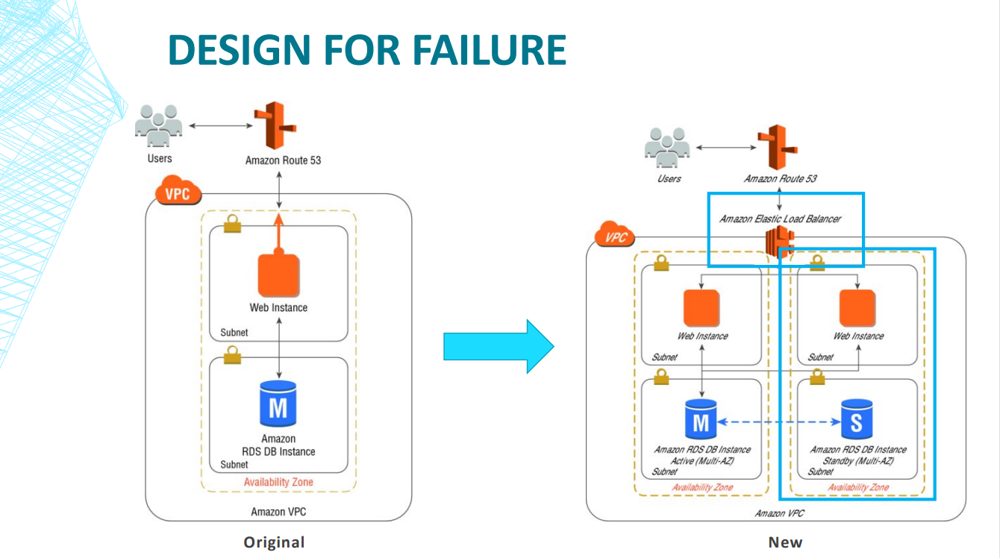
◆ Elasticity: is the ability of a system to grow to handle increased load.
1. Vertical scaling- increase in the specifications of an individual resource
2. Horizontal scaling- increase in the number of resources
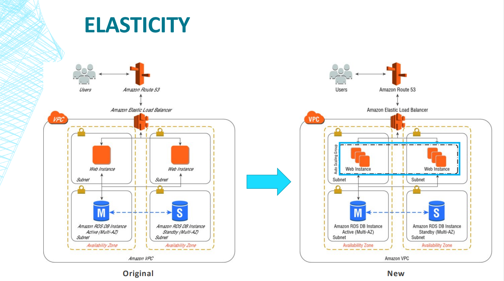
Q: How can this web application be optimized by just looking at different storage options?
A: 1. Amazon ElastiCache is a fully managed, in-memory caching service supporting flexible, real-time use cases. You can use ElastiCache for caching, which accelerates application and database performance, or as a primary data store that don't require durability.
2. Amazon CloudFront is a content delivery network (CDN) service built for high performance, security, and decrease end-user latency. CloudFront speeds up content delivery by leveraging edge locations, to reduce delivery time by caching your content close to your end users.
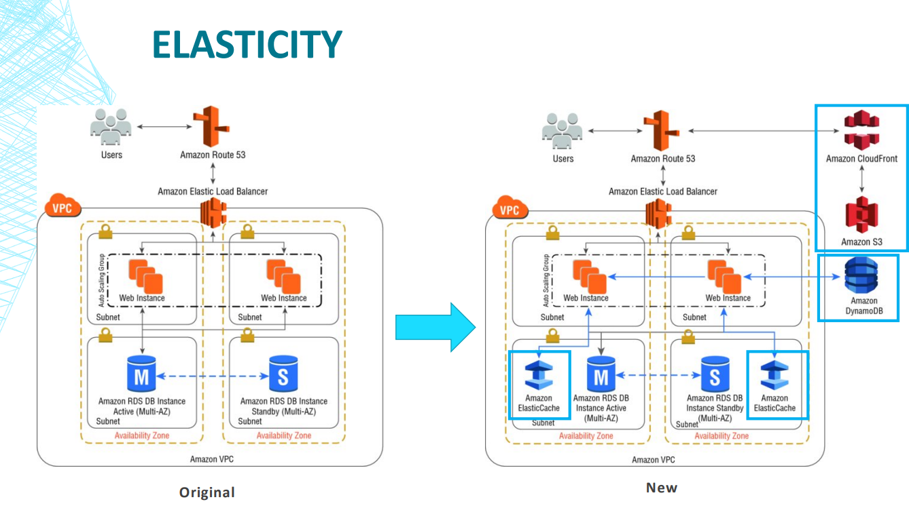
◆ Decouple components (解耦組件) vs. monolithic architecture (單體架構)： Monolithic architecture- all processes are tightly coupled or connected, and run as a single service. Decouple components- decoupled application components, then each would gain the ability to be scaled and managed based on individual needs.
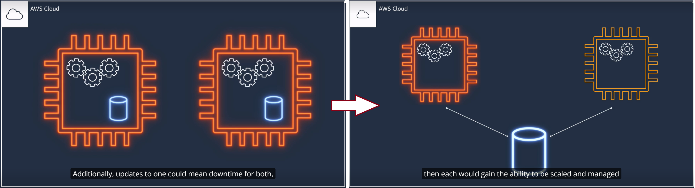
◆ Implement elasticity in the cloud vs. on-premises: Dynamically change capacity based on demand in cloud (Elasticity、Scalable). Saving time during setup and removes the undifferentiated heavy lifting.
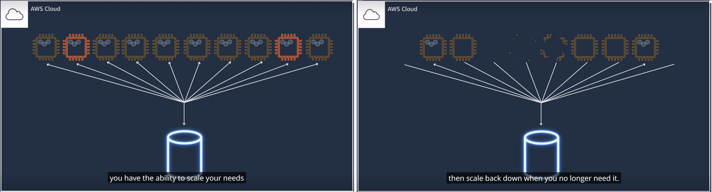
◆ Think parallel: Serial and sequential processing are limiting, dependencies can make or break entire processes. Looking at how can divide a job into its simplest form, and then distribute that load to multiple components to handle the demand. Multi-threading requests by using multiple concurrent threads will store or fetch the data faster than requesting it sequentially. Distribute the incoming requests across multiple asynchronous web servers using a load balancer
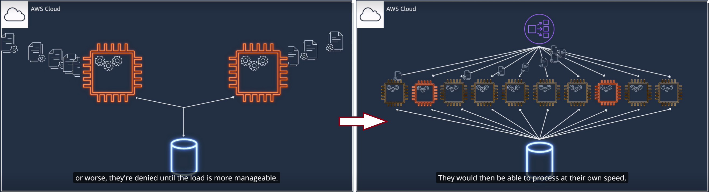
-
laaS, PaaS, and SaaS
◆ Infrastructure as a Service (IaaS) 基礎設施即服務 (EC2、Lightsail、VPC、Direct Connect) ◆ Platform as a Service (PaaS) 平台即服務 (S3、Deep Learning AMI、Cloud Watch、Elastic Beanstalk) ◆ Software as a Service (SaaS) 軟體即服務 (RDS、DynamoDB、Redshift、Glue、EMR、Kinesis) ◆ Infrastructure as code (IaC) 基礎設施即代碼- creation, deployment, and maintenance of infrastructure in a programmatic, descriptive, and declarative way.
AWS CDK
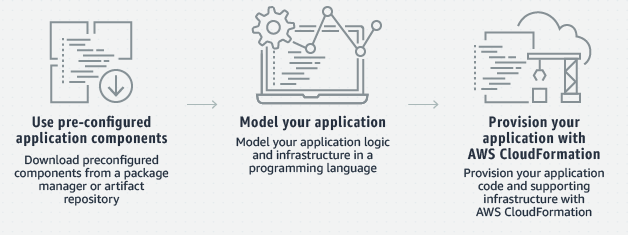
AWS Cloud Formation 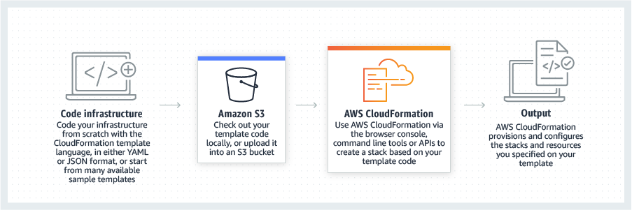
Reference：
1. AWS Fundamentals- Core Concepts
2. Business Value on AWS
3. Cloud Economics Center
4. AWS Pricing/TCO Tools
5. Optimizing your cost with Rightsizing Recommendations
6. Design Principles
7. Architecure Best Practices
8. Common ElastiCache Use Cases and How ElastiCache Can Help
Module 2: Security and Compliance
-
AWS Shared Responsibility Model (https://aws.amazon.com/tw/compliance/shared-responsibility-model/)
◆ customer’s or AWS responsibility? The level of responsiblity the customer assumes changes depending on the service they are using. ex: AWS is responsible for patching on Amazon RDS、underlying/networkinfrastucture (software 底層、網路基礎設施)、Physical secuity( hardware 全球基礎設施), customer are responsible for patching DB running on Amazon EC2, depends on if an AWS service is managed or not (是否託管服務)

-
AWS Cloud Security and Compliance Concepts (https://aws.amazon.com/tw/compliance/programs/)
◆ AWS Artifact: provides on-demand access to AWS’ security and compliance reports and select online agreements. ◆ Data Encryption: 1. Data at rest encryption capabilities available in most AWS services. 2. Dedicated, hardware-based cryptographic key storage using AWS CloudHSM 3. Encrypted message queues for the transmission of sensitive data using server-side encryption (SSE) for Amazon SQS
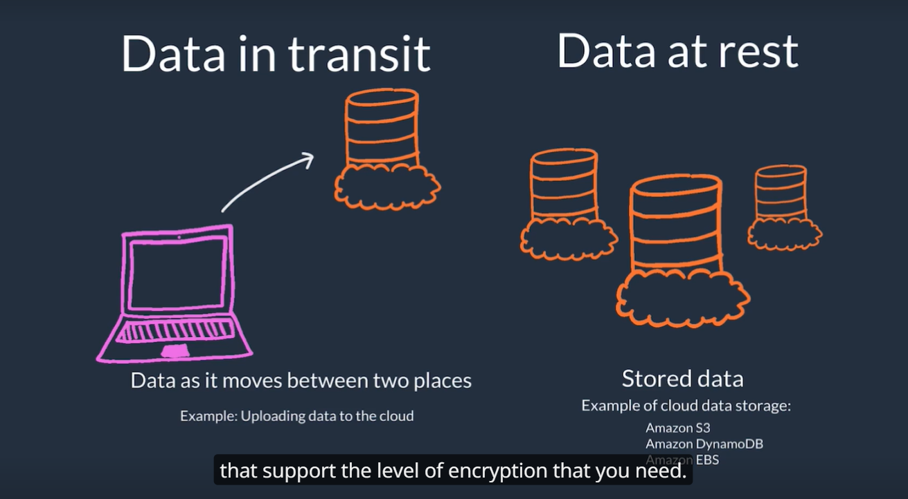
◆ AWS Cloudwatch: is a monitoring service that monitoring data generated by resources, ex: give insight into if an overloaded EC2 or an unusually high number of requests hitting an Elastic Load Balancer.
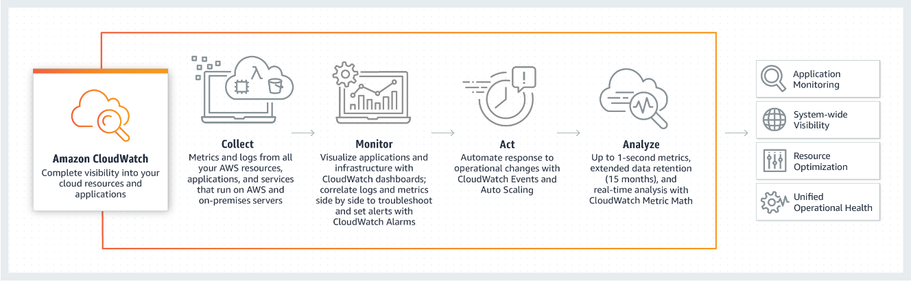
◆ AWS CloudTrail: is a service that logs AWS API calls, enables risk auditiong by continuously monitoring and logging account activity, including user actions in the AWS Management Console and AWS SDKs. (紀錄帳戶所有活動)
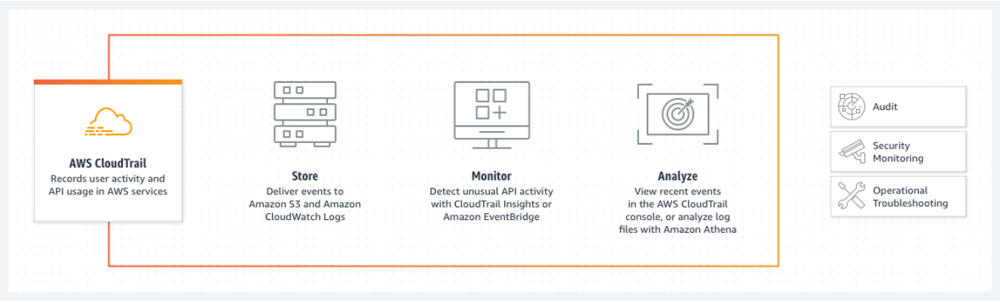
◆ AWS Config: is a service that can use to assess, audit, and evaluate the configurations of AWS resources. (只記錄對資源配置的更改)
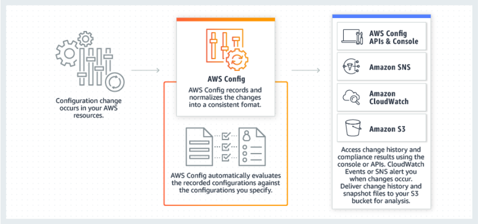
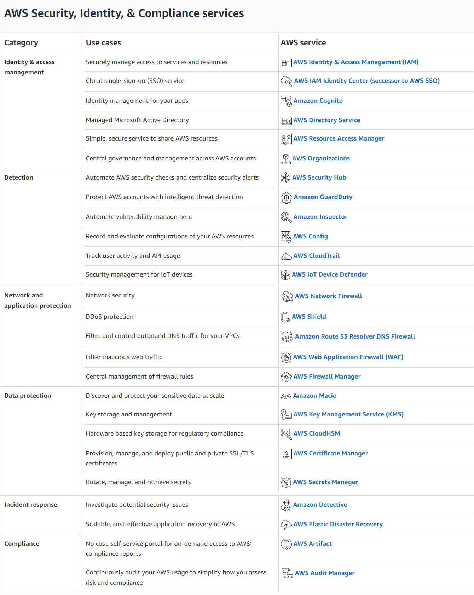
-
AWS Access Management Capabilities (https://docs.aws.amazon.com/IAM/latest/UserGuide/id.html)
◆ Least privilege: Only give people exactly the level of access that they need. ◆ Root user: has complete and unrestricted access to all resources in an AWS account, should not be using this user to carry out daily tasks in AWS. Use multi-factor authentication (MFA) for locking away root user credentials, rotating access keys and the password to protect it. ◆ IAM: Uses/ Groups/ Roles/ Policies 1. Uses: Give people the ability to sign in to the AWS Management Console for interactive tasks and to make programmatic requests to AWS services using the API or CLI. 2. Groups: Attach policies to multiple users at one time. 3. Roles: A role does not have any credentials (password or access keys) associated with it. Instead of being uniquely associated with one person, a role is intended to be assumable by anyone who needs it. 4. Policies: Manage access in AWS, attaching them to IAM identities (users, groups of users, or roles) or AWS resources.

Q: When to create an IAM role (instead of a user)?
A: 1. You're creating an application that runs on an EC2 instance and that application makes requests to AWS.
2. You're creating an app that runs on a mobile phone and that makes requests to AWS.
3. Users in your company are authenticated in your corporate network and want to be able to use AWS without having to sign in again—that is, you want to allow users to federate into AWS.
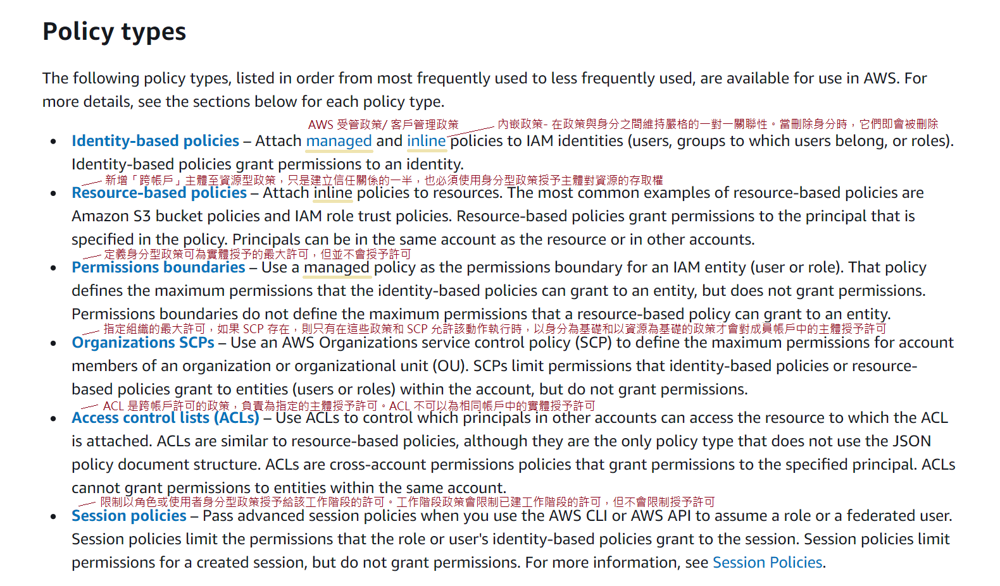 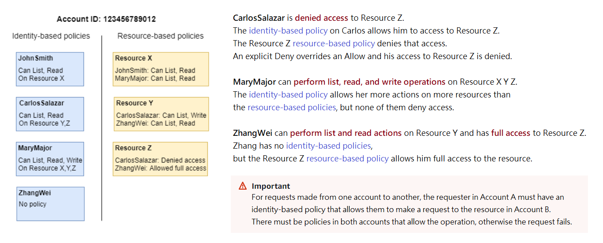
The following flow chart provides details about how the decision is made. This flow chart does not cover the impact of resource-based policies and implicit denies in other types of policies.

-
Network Security (https://aws.amazon.com/products/security/network-application-protection/)
◆ Security groups: are instance-level firewalls, they can allow a request based on port, protocol, and source or destination, but cannot inspect an HTTP packet. ◆ Network access control list (network ACLs): are subnet-level firewalls, they can allow or deny traffic based on traffic type, port, protocol and source or destination, but cannot inspect request's contents. ◆ AWS web application firewall (WAF): is a firwall that can fliter out traffic based on any part of the request, such as IP addresses, HTTP headers, HTTP body, or URL strings. ex: it can filter out any requests that have SQL code, which would prevent a SQL injection attack. ◆ AWS Trusted Advisor (監控服務配額以降低成本、提升效能並改善安全)/ Amazon Inspector (自動化漏洞管理服務，可不斷掃描 AWS 工作負載以尋找軟體漏洞和意外網路風險): Can give recommendations around security ◆ AWS Marketplace: Find third-party security software
Reference：
1. Shared Responsibility Model
2. AWS Artifact
3. Security, Identity, and Compliance on AWS
4. AWS Identity and Access Management
5. Security best practices in IAM
6. AWS CloudTrail
7. Amazon CloudWatch
8. AWS Config
9. Security best practices for your VPC
10. Control traffic to resources using security groups
11. Control traffic to subnets using Network ACLs
12.. IPv4 & Subnet Mask
Module 3: Technology
-
Methods of Deploying and Operating in the AWS Cloud
◆ Methods to communicate to the AWS Cloud: 1. APLs and SDKs 2. AWS Command Lind Interface (CLI) (ex: Linux shell、AWS CloudShell) 3. AWS Management Console 4. Infrastructure as code (laC) 5. Integrated Development Environments (IDE) ◆ Amazon VPC 1. Network-to-Amazon VPC 2. Amazon VPC-to-Amazon VPC 3. Software remote access-to-Amazon VPC 4. Transit VPC Q: Which components are requires to build a successful site-to-site VPN connection on AWS? A: Customer Gateway、Virtual Private Gateway
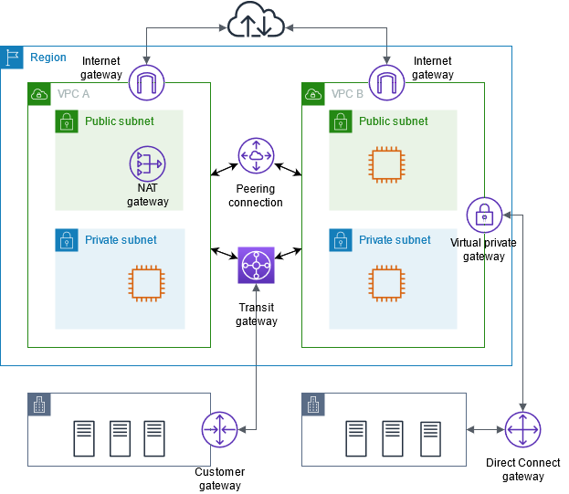
-
AWS Global Infrastructure
◆ Availability Zones: are one or more discrete data centers with redundant power, networking, and connectivity in an AWS Region. ◆ Regions: are phyical location that consists of clusters of data centers. There are many different Regions around the world, and enable the deployment of compute and storage resources globally. ◆ Edge Locations: Endpoints that serve cached content and provide access to AWS service.
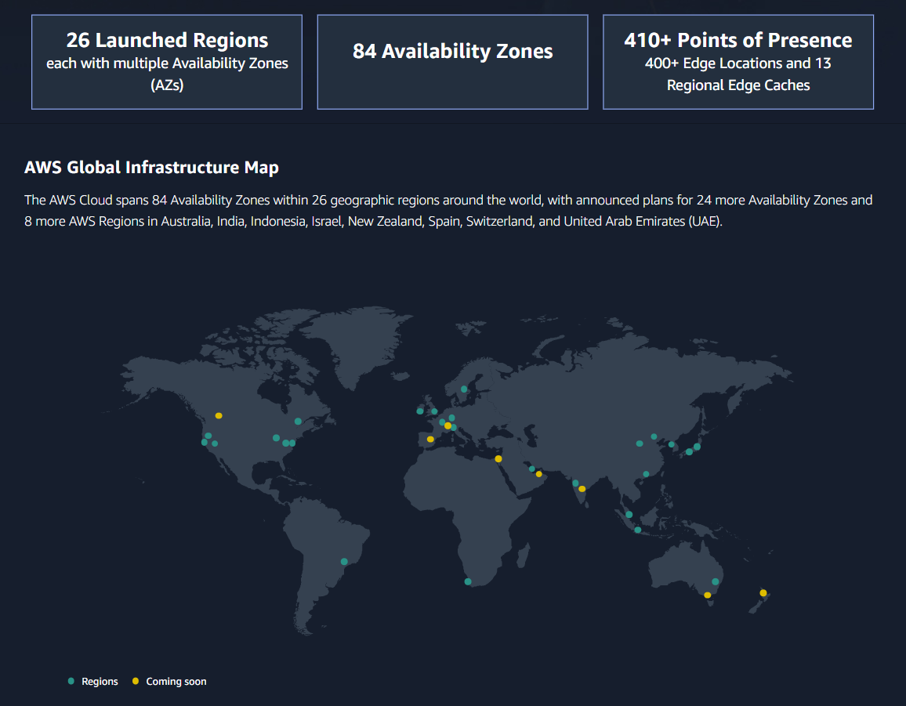
-
Core AWS Services
◆ AWS Compute: ◎ Instances 1. EC2- [Instance Types](https://aws.amazon.com/ec2/instance-types/)、[Pricing](https://aws.amazon.com/ec2/pricing/) 2. AWS Batch- Run hundreds of thousands of batch computing jobs on AWS. Q: What are the differences between Amazon EC2 and Amazon Lightsail? A: Amazon EC2 instances are meant for small to complex architecture. Lightsail is better for small to medium scale workloads. (https://aws.amazon.com/tw/premiumsupport/knowledge-center/lightsail-differences-from-ec2/) ◎ Containers 1. Amazon ECS- Container orchestration/ management service. 2. AWS Fargate- Run containers without having to manage servers or clusters. 3. Amazon ECR- Fully-managed Docker container registry that manage Docker container images. 4. Amazon EKS- Run the Kubernetes management infrastructure across multi-AZ to eliminate a single point of failure. 5. AWS App Runner- is the easiest way to run web application (including API services, backend web services, and websites) on AWS. Q: AWS EKS vs. ECS vs. Fargate vs. Kops? A: https://cast.ai/blog/aws-eks-vs-ecs-vs-fargate-where-to-manage-your-kubernetes/ ◎ Serverless 1. AWS Lambda- Run code without provisioning or managing servers, and set up code to automatically trigger from other AWS services. ◎ Edge and hybrid 1. AWS Outposts- Run AWS infrastructure and services on premises. 2. AWS Snow Family- Move petabytes of data to and from AWS, or process data at the edge. 3. AWS Wavelength- Embeds AWS compute and storage services within 5G networks, providing mobile edge computing infrastructure for ultra-low-latency applications. ◎ Cost and capacity management 1. AWS Elastic Beanstalk- Simply upload code, and AWS Elastic Beanstalk automatically handles the deployment, from capacity provisioning, load balancing, and auto scaling to application health monitoring. 2. EC2 Image Builder- Keeping virtual machine (VM) and container images up-to-date
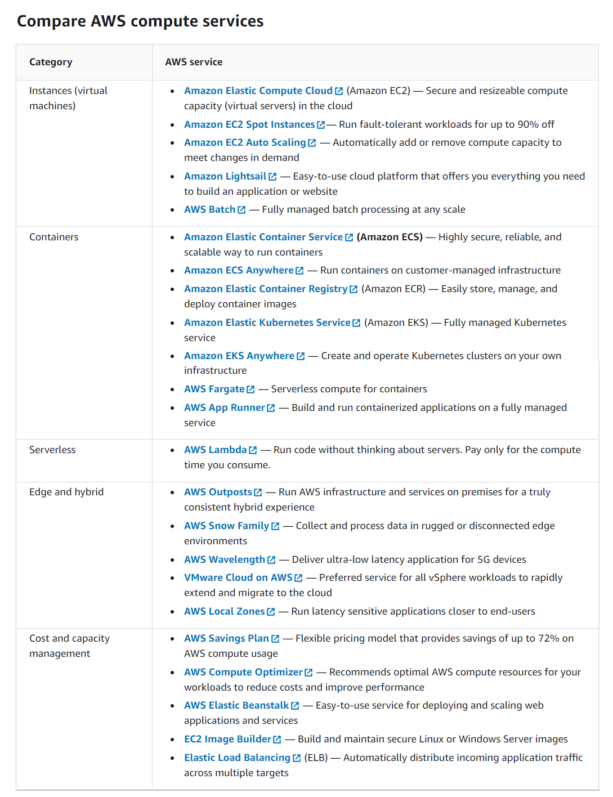
◆ AWS Storage:
1. Amazon Elastic Block Store (EBS)- Provides persistent block storage volumes and automatically replicated within its Availability Zone.
2. Amazon Elastic File System (EFS)- provides a simple, scalable, elastic file system for Linux-based workloads for use with AWS Cloud services and on-premises resources.
3. Amazon Simple Storage Service (S3)- is an object storage service. storage classes: S3 Intelligent-Tiering/ S3 Standard/ S3 Standard-IA/ S3 Glacier
4. AWS Storage Gateway- is a hybrid storage service that allows on-premises applications to seamlessly use AWS cloud storage. The gateway connects to AWS storage services.
Q: When should I use Amazon EFS vs. Amazon EBS vs. Amazon S3?
A: S3 is for object storage.(photos, videos, files, and simple web pages)
EBS is for EC2 block storage.(computer’s hard drive)
EFS is a file system for many EC2 instances.(multiple EC2 instances and lots of data)
◆ Networking and Content Delivery:
1. Amazon API Gateway- Create an API that acts as a “front door” for applications to access data, business logic, or functionality from back-end services.
2. Amazon CloudFront- Securely deliver content with low latency and high transfer speeds.
3. Amazon Route 53- Domain Name System (DNS) web service.
4. Amazon VPC- Provides a logically isolated section of the AWS Cloud where you can launch AWS resources in a virtual network.
5. AWS Direct Connect- Establishes a dedicated network connection from premises to AWS.
6. AWS Global Accelerator- Improves application availability by continuously monitoring the health of your application endpoints and routing traffic to the closest healthy endpoints.
7. AWS Transit Gateway- Connects VPCs and on-premises networks through a central hub.
◆ Database:
1. Amazon Aurora- is a MySQL and PostgreSQL compatible relational database engine
2. Amazon DynamoDB- is a key-value and document database
3. Amazon ElastiCache- Retrieve information from fast, managed, in-memory caches, instead of relying entirely on slower disk-based databases. Caching engines: Redis/ Memcached
-
AWS Technology Support
Support areas: 1. Documentation (Whitepapers, AWS Knowledge Center, Forums, Blogs) 2. Account-specific support 3. AWS Partner Network (APN) and AWS Marketplace 4. AWS Trusted Advisor Q: Which AWS support plan provides access to architectural and operational reviews, as well as 24/7 access to senior cloud support engineers through email, online chat, and phone? A: Enterprise
Reference：
1. Tools to Build on AWS
2. Global Infrastructure
3. Amazon Virtual Private Cloud Connectivity Options
4. Amazon Web Services Cloud
5. 10個Q&A快速認識Docker
6. 剖析容器的資安風險與防護
7. AWS ECS 容器编排服务应用开发中文入门教学
8. 比較Amazon EBS. EFS. S3：為您的企業選擇最佳的AWS存儲服務
9. Amazon S3 vs EBS vs EFS
10. Compare AWS Support Plans
Module 4: Billing and Pricing
-
Pricing Models
Q: A company has an application that only needs to run for 2 hours AT ANY TIME during a day. Which EC2 type will be MOST cost-effective for this application? A: Spot Instances
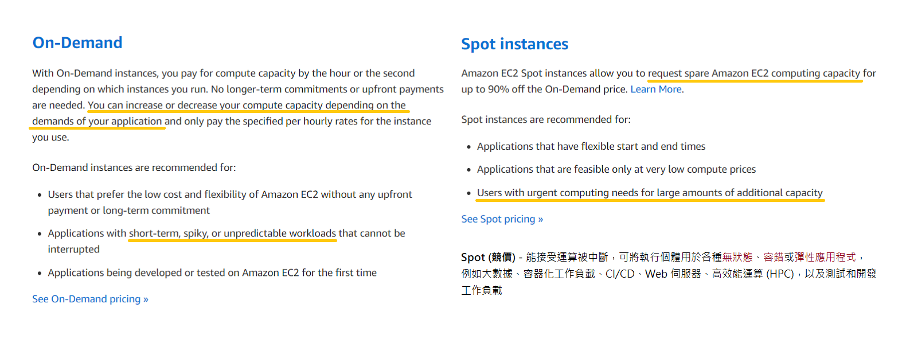 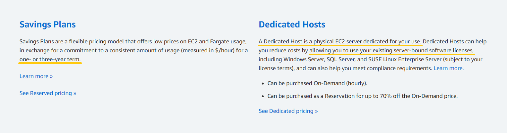 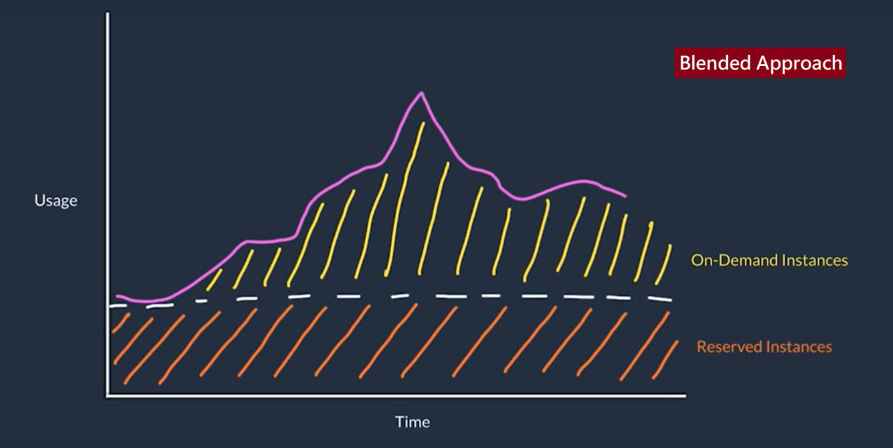
-
Various Account Structures
AWS Organizations: 1. Centralized management of all of your AWS accounts. 2. Consolidated billing for all member accounts
Identify resources available for billing support
◆ AWS Cost Explorer: is an interface located in the AWS Mangement Console, and gives a way to visualize and manage costs in a granular way. (by month, service, tag...)
◆ AWS Cost and Usage Report: contains the most comprehensive set of AWS cost and usage data available.
◆ Amazon QuickSight: is a Data-visualization tool to analyze AWS usage and costs, or to create custom reports.
◆ AWS Simple Monthly Calculator: Estimate how much bill will be based on usage projections.
◆ AWS Budgets: Alerted by email or SNS notification when actual or forecasted cost and usage exceed your budget threshold, or when your actual RI and Savings Plans' utilization or coverage drops below your desired threshold.
Reference：
1. What is AWS Organizations?
2. Instance purchasing options
3. AWS Certified Cloud Practitioner